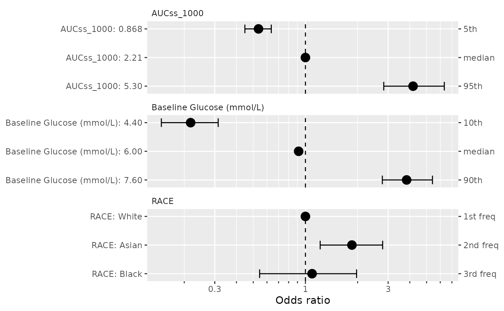

Customize specifications for covariate effect simulations/visualizations
edit_spec_coveff.Rdbuild_spec_coveff_one_variable()is a helper function to create a new specification for a single variable. This is useful when you want to customize the specification for a single variable.replace_spec_coveff()is used to replace the specification for some (or all) variables in the original specification data frame. If you want to replace multiple variables, you can just stack the specifications together.
Usage
build_spec_coveff_one_variable(
var_name,
values_vec,
qi_width_cov = 0.9,
n_sigfig = 3,
use_seps = TRUE,
drop_trailing_dec_mark = TRUE,
show_ref_value = TRUE
)
replace_spec_coveff(spec_orig, spec_new, replace_ref_value = FALSE)Arguments
- var_name
The name of the variable for which a new spec is to be created.
- values_vec
The vector of the values for creating a new spec.
- qi_width_cov
the width of the quantile interval for continuous covariates in the forest plot. Default is 0.9 (i.e. visualize effect of covariate effect at their 5th and 95th percentile values).
- n_sigfig
Number of significant figures to form value_label of continuous variables. See
gt::vec_fmt_number()for details.- use_seps
Whether to use separators for thousands in printing numbers. See
gt::vec_fmt_number()for details.- drop_trailing_dec_mark
Whether to drop the trailing decimal mark (".") in value_label of continuous variables. See
gt::vec_fmt_number()for details.- show_ref_value
Whether to show the reference value in the plot and table. Setting this results in the
show_ref_valuecolumn in the specification data frame.- spec_orig
Original specification data frame.
- spec_new
New specification data frame. It can be generated by
build_spec_coveff_one_variable()or manually crafting with the following variables:var_name,var_label,value_order,value_annot,value_label,value_contorvalue_cat,is_ref_value,show_ref_value. You can have multiple variables stacked together.- replace_ref_value
Whether to replace the reference values from the original specification data frame. Default is FALSE; in this case, show_ref_value is set to FALSE as it can be confusing. If you set replace_ref_value to TRUE, the reference calculation for the forest plot is also done with the one in spec_new.
Value
See build_spec_coveff() for the structure of the return object.
build_spec_coveff_one_variable() returns a data frame corresponding to
the specification for a single variable, which can be used as an input to
replace_spec_coveff().
Examples
set.seed(1234)
data(d_sim_binom_cov_hgly2)
ermod_bin <- suppressWarnings(dev_ermod_bin(
data = d_sim_binom_cov_hgly2, var_resp = "AEFLAG",
var_exposure = "AUCss_1000", var_cov = c("BGLUC", "RACE"),
verbosity_level = 0,
# Below option to make the example run fast
chains = 2, iter = 1000
))
spec_coveff <- build_spec_coveff(ermod_bin)
spec_new_bgluc <- build_spec_coveff_one_variable(
"BGLUC", seq(4, 8, by = 0.1),
qi_width_cov = 0.8, show_ref_value = FALSE
)
spec_coveff_new <- replace_spec_coveff(spec_coveff, spec_new_bgluc)
plot_coveff(ermod_bin, spec_coveff = spec_coveff_new)
